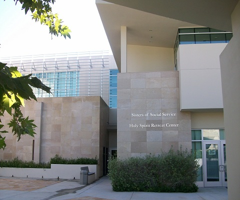

 Holy Spirit Retreat Center was founded by the Sisters of Social Service of Los Angeles at the request of Archbishop Cantwell in the early 1930's. It was the first retreat center for women in the Archdiocese of Los Angeles and it was located in the mid-Wilshire district. In 1969 the Center was moved to its current location in Encino, CA. From 1950 until 1969, the Encino property was used as a place of formation for women who felt called to the Sisters of Social Service.
Because of its location and the beauty of the grounds, the Center began to expand in its new surroundings. Weekend retreats for women continued but extensive outreach was done to offer support and a place of peace to the divorced, widowed, single parents, and disabled.
In the early 70's, we were approached by Rabbi Maller from Temple Akiba in Culver City. He was inquiring as to whether or not our Center would be open to hosting a Jewish Marriage Encounter Weekend. We said "yes" and the rest is history! Our story as Sisters of Social Service is very connected to the Jewish people. We were founded in Budapest, Hungary in 1923 and were involved with housing Jewish families and individuals during the Nazi invasion.
The experience with Temple Akiba provided an opportunity for us to be very intentional in our future mission and ministry. While we have always maintained our Catholic roots and tradition and our Benedictine charism, it is our desire to provide an atmosphere of peace and hospitality to all people. We welcome the interfaith community and those of "no faith". We ask only that there is respect and regard amid the differences.
2009 marked our 40th anniversary in Encino. Approximately 17,000 people of all ages and backgrounds visit us each year to refresh their spirits and to soak in the quiet and wooded beauty of this place.